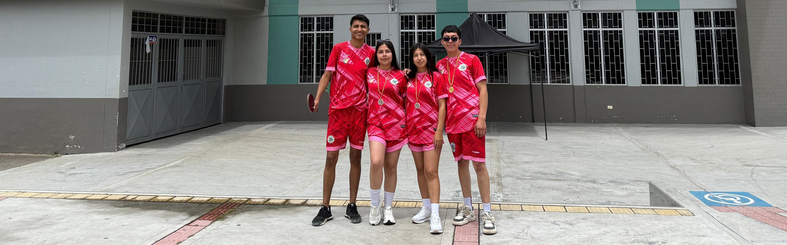
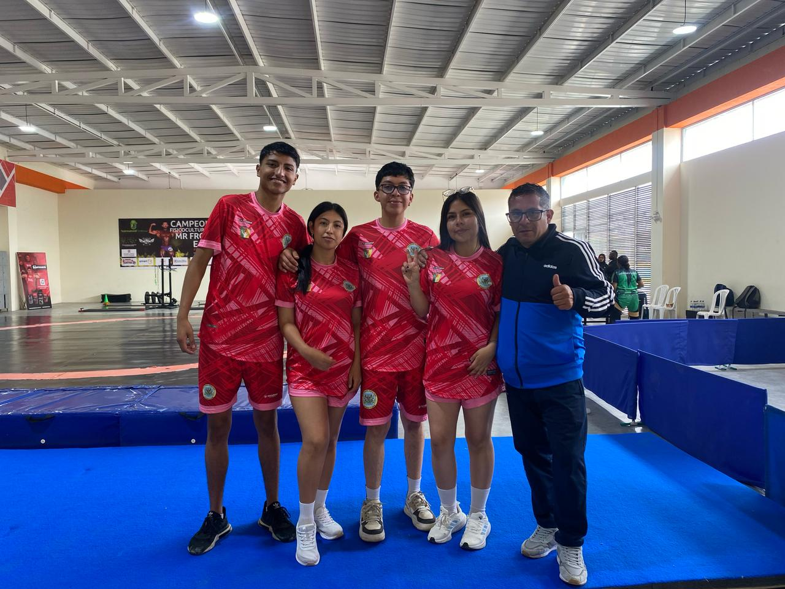
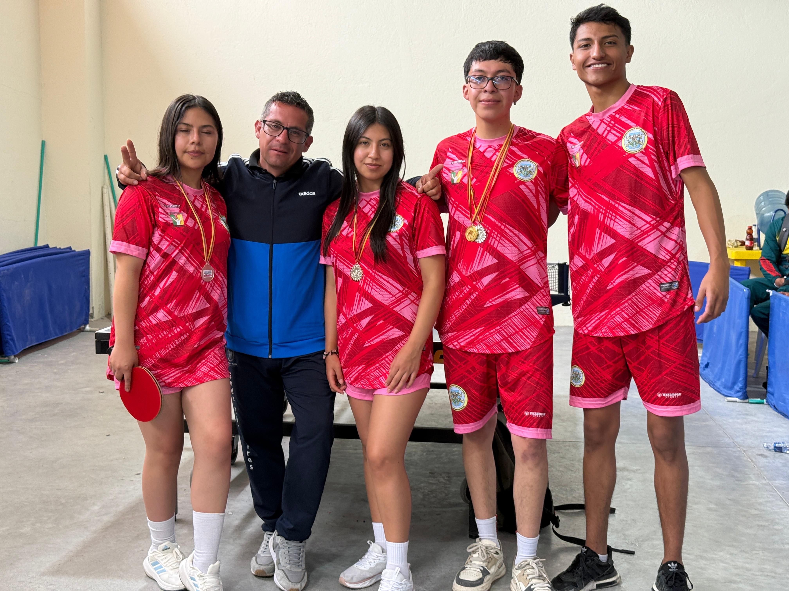
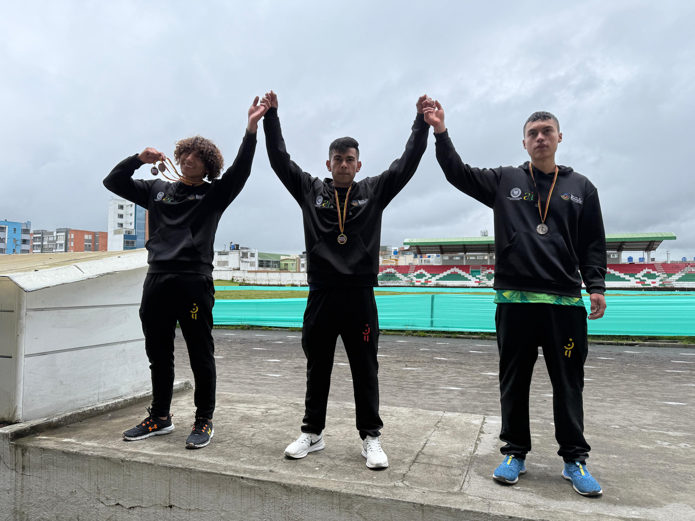
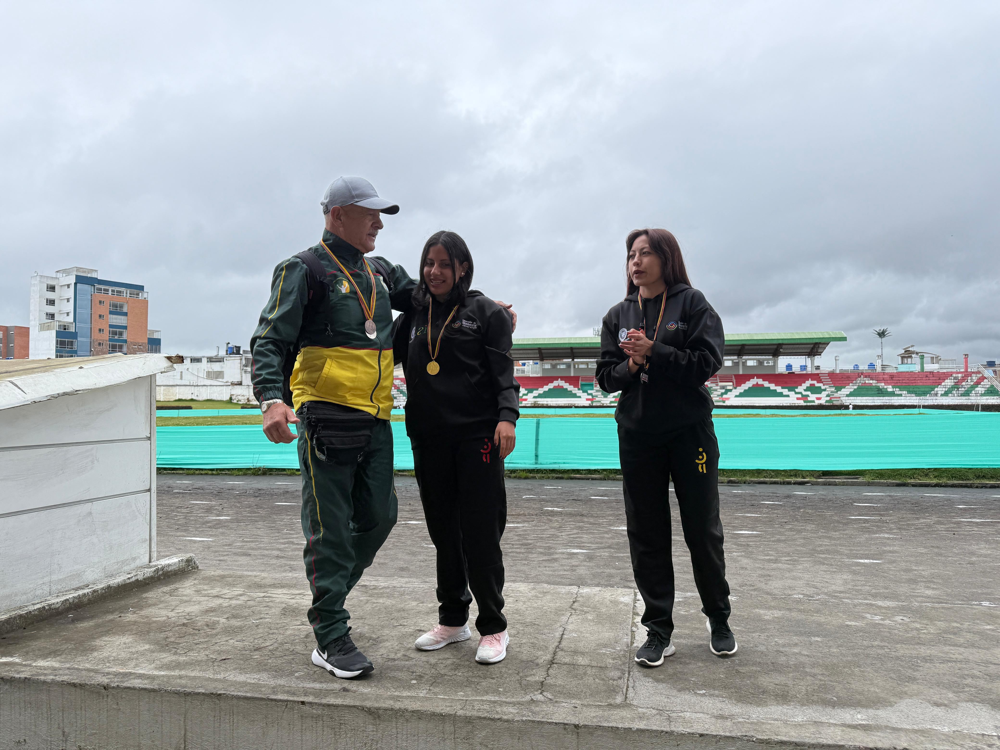
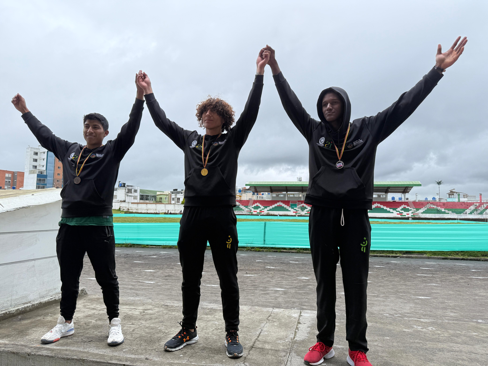
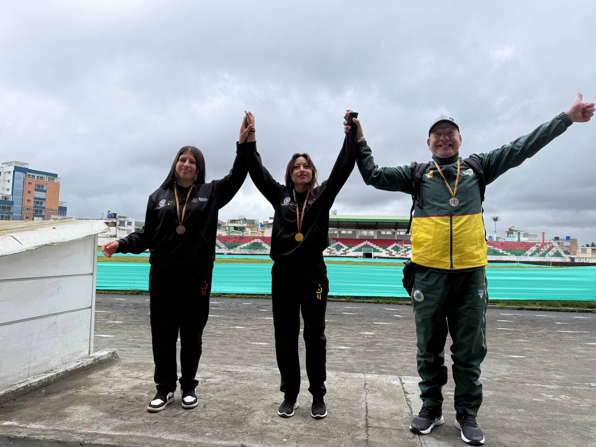
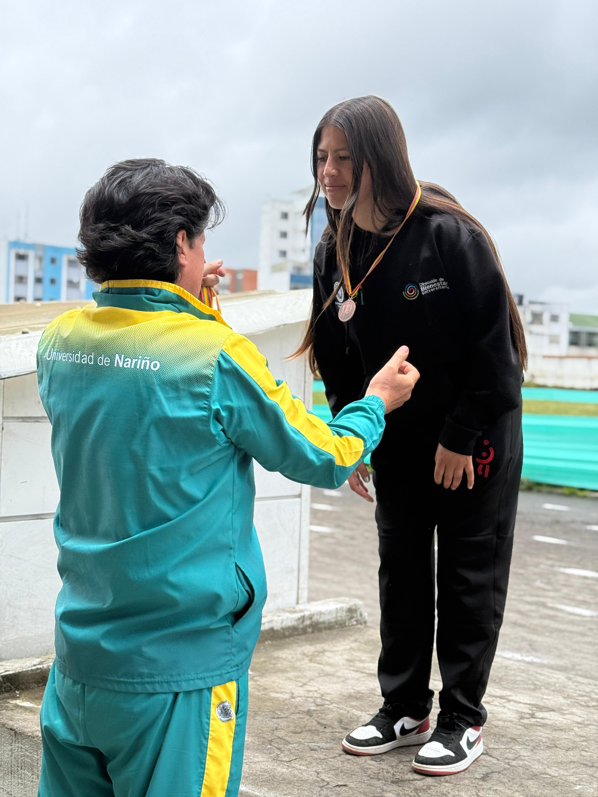
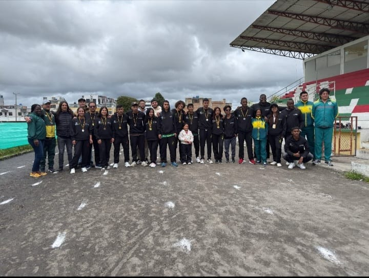

HISTORIA

La Universidad de Nariño inicia actividades en Túquerres tras la
firma de un acuerdo de voluntades con el municipio. Se inician labores académicas con los
programas de Ing. de Sistemas y Licenciatura en Educación Básica con Énfasis en Ciencias
Naturales y Medio Ambiente.
Firma del primer Convenio Interadministrativo entre la Universidad y la Alcaldía de Túquerres.
Se otorgan instalaciones correspondientes a la antigua zona de carreteras, en comodato por 20
años para la sede universitaria.

Semestre B: Apertura del programa de Ingeniería Civil con 50 estudiantes matriculados. Posteriormente se abren los programas de pregrado y posgrado como Administración de Empresas, Ing. Agronómica, Ingeniería Electrónica, Ing. Agroindustrial, Pedagogía de la Creatividad, Docencia Universitaria, Gerencia en Salud, Curso de Inglés y Preuniversitarios.
Adquisición de instalaciones

Diciembre 17: Firma del "Acta de Acuerdo de Cruce de Cuentas y Dación de Pago" entre la Universidad y la Alcaldía de Túquerres. La Universidad de Nariño adquiere la propiedad de las instalaciones de la antigua zona de carreteras, permitiendo inversiones en infraestructura.
Ampliación de infraestructura

La Universidad presenta un proyecto de ampliación de infraestructura ante la Gobernación de Nariño, con una inversión total de $272,131,153 para la construcción de un nuevo bloque académico administrativo proyectado para 150 estudiantes.
Ampliación de cobertura

Aprobación del proyecto de ampliación de cobertura educativa, investigativa y de proyección social por parte del Sistema General de Regalías, con una inversión de $2,154,590,891. Este proyecto fue reconocido a nivel nacional en la premiación "La Noche De Los Mejores" por la DNP (Dirección Nacional de Planeación).
Registro calificado

Septiembre 30: Obtención del registro calificado para el programa de Economía. Se unifica la tabla de matrículas en las sedes regionales, aplicando una política de matrícula según la situación socioeconómica de los estudiantes.
Nuevos registros calificados

Mayo 18: Obtención del registro calificado para el programa de Administración
de Empresas.
Agosto 22: Obtención del registro calificado para el programa de Ingeniería
Agronómica.
Convenio municipal

Firma de un convenio con el municipio de Túquerres para asignación presupuestal destinada a mejoras en las obras interiores de la universidad.
Dotación de laboratorios

Desarrollo del proyecto "Dotación de equipos de laboratorio al municipio de Túquerres Extensión Universidad de Nariño" con una inversión de $760,000,000, financiado por el Plan de Fomento a la Calidad, para fortalecer la formación académica de los estudiantes.
Eco Campus Universitario

Aprobación del proyecto "Construcción de obras complementarias en espacios exteriores de la
Universidad de Nariño en el municipio de Túquerres", financiado por el Sistema General de
Regalías.
Inicio del proyecto del Eco Campus Universitario en Túquerres, con la donación de un lote por
parte del municipio para la construcción de nuevas instalaciones.
Autorización de donación

Junio 8: El Concejo Municipal de Túquerres autoriza la donación del lote para el Eco Campus Universitario mediante el Acuerdo No. 05.
Formalización de donación
Escritura Pública No. 1164: Formalización de la donación del lote denominado
"Escuela Alfonso López", valorado en $4,593,221,000, para la construcción del Eco Campus
Universitario.
Octubre 27: Creación del cargo de Profesional Universitario Secretario
Académico adscrito al municipio de Túquerres, mediante el Acuerdo 053 del Consejo Superior
Universitario.
ACUERDO NÚMERO No. 052
Renovación de registro
Junio 21: Renovación del registro calificado para el programa de Administración de Empresas por siete años.
Toca cada evento para ver más detalles